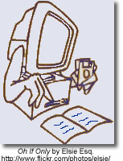
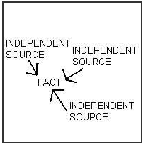
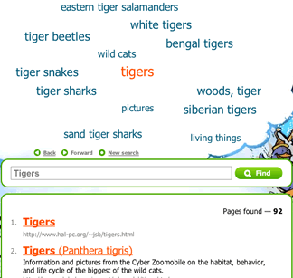
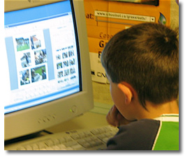
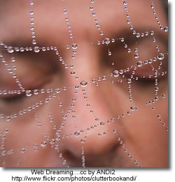
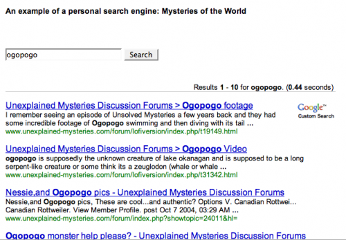

Information literacy
Research Planners
Steps to Learning Success: A Research Planner Form
Hands-Up Research Planner (download from Flickr)
Clip useful information.
You can add clippings of text, images and links from web pages to your Google Notebook without ever leaving your browser window.
Organize your notes.
You can create multiple notebooks, divide them into sections, and drag-and-drop your notes to stay organized.
Get access from anywhere.
You can access your Google Notebooks from any computer by using your Google Accounts login.
Publish your notebook.
You can share your Google Notebook with the world by making it public.
You will need to have a Google Account to set up your google notebook. See this screencast to learn how to create your account.
Zotero - this Firefox add-on is perfect for students and professionals who need to keep track of a heavy load of research sites. The add-on stores PDFs, files, images, links and records in any language; automatically saves citations; offers a note taking autosave feature and more. The best part? It all fits neatly in your Firefox browser without getting in the way.
Start Pages
Using Personalized Start Pages for your browser's home page is a tidy and efficient solution to keeping all your favorite and frequently visited resources on the Web on one handy and customizable page. From: Set Up Your Personalized Start Page with Netvibes, Pageflakes or Protopage
Other tools to be Organized
Remember the Milk - manage tasks
Evaluating Information
...the presence of inaccurate and biased information on the Internet is not our primary problem.
The information and points of view have not really changed, it is the tools that have changed.
David Warlick in Evaluating Internet-Based Information: A Goals-Based Approach
Evaluating Information
- Use specific criteria to determine the legitimacy of sources
- Evaluate resources based on relevance and reading level
- Determine different points of view presented in two pieces of information on the same topic
- Distinguish between bias, opinion and fact
In the article Critical Evaluation in the Collaborative Era, Kathy Schrock asks How do we teach critical evaluation of information when we have no way to determine authority? The focus in this article is on the issues and difficulties that arise in determining the 'research worthiness' of information in a wiki world.
Articles and Checklists
Better Read That Again: Web Hoaxes and Misinformation
This article differentiates and discusses differenent kinds of misinformation: counterfeit sites, parodies and spoofs, ficticious, questionable, malicious, product sites and subject specific misinformation sites. It also offers a number of sites that track internet misinformation including Snopes.
BBC interview with Tara Brabazon - "Google is white bread for the mind" - article in Times Online. - both of these may be time sensitive and therefore at some point the links may be broken.
Google is “white bread for the mind”, and the internet is producing a generation of students who survive on a diet of unreliable information
Teacher Helpers: Critical Evaluation Information - a collection of articles and evaluation checklists available from Kathy Schrock
Popular MicroModules on Evaluation from the 21st Century Information Fluency Project:
|
Hints About Print
This is an interactive tool that takes students (grade 3 - 5) through a processing of determining if a non-fction book is the best resource for their research. Once students have viewed the online demo they can print-out a fillable PDF and evaluate their own non-fiction book.
Quality Information Checklist - uses imaginary examples, quizzes and puzzles to allow young people (grades 3 - 7) explore for themselves the concepts around information quality. Many of the examples are health related, but the concepts can be used with any subjects that require information skills.
Fact or Folly: Evaluating Online Information - from Media Awareness Network
Evaluating Web Pages: Techniques to Apply & Questions to Ask - uses critical thinking skills, a series of specific questions, and techniques to provide a strategy for determining if a website can be trusted.
Online Evaluation Tools
Digital Index Card - a web-based tool for collecting and evaluating Net information. It consists of six forms that ask questions of the researcher, all designed to collect content and to help the researcher make decisions about the appropriateness of the information. As student input pertinent information about the source they asked questions which relate back to their research goal e.g. What aspect(s) of the author's or publishing organization's background helps you accomplish your goal?
Evaluation Wizard from 21 Century Information Fluencey - as students enter their evaluation notes for author, publisher, objectivity, date, accurancy and evidence they are provided with prompts about what to look for within the web site they are evaluating.
A WebQuest about Evaluating Web Sites : from Joyce Valenza for grade 9 - 12 students (Note - last updated in 2001 - links may have to be updated)
Applying Reading Comprehension Strategies to the Evaluation Process
 Critical Evaluation: Scary Research Findings Prompt New Internet Reading Strategies
Julie Coiro presents five activities associated with the online reading tasks that research suggests are particularly challenging for students who read to learn on the Internet. Each activity is accompanied with pertinent questions and relevant web sites.
- evaluating relevancy - reading search results
- evaluating reliability- investigating the author
- evaluating reliability - investigating the validity of the web site
- detecting bias - separating fact from opinion
- detecting bias - developing a healthy skeptism
A Think Aloud to Model Online Reading demonstrates how to use reading comprehension strategies to read, question and ultimately evaluate the relevance and validity of a web page. From: 21 Century Literacies
Researching a Web Page - using Treaty 6 students respond to a number of questions which focus their reading on each part of the Web page. (From - Elgin Wyatt, NBCHS)
From Alan November
Our students must understand the architecture of the internet to be able to effectively evaluate the information they find.
How to Read a Web Address - The first step in learning the grammar of the Internet is to read URLs closely.
WayBack Machine - Want to see the history of web site? Take a trip through time with the Wayback Machine.
How to Find the Publisher of a Website using EasyWhoIs
Beyond the Checklist - using contextual analysis to evaluate web pages
 Student Web Page Evaluation - a blog post that describes a successful lesson in which the teacher asks the students to use the comparison method. This requires requires the researcher to compare different sources and different types of sources in order to select the most useful.
Diagram from U Arizona Information Literacy: Evaluating Web Resources
Visual Search Engines
Visual Search Engines
Standard search engines are great for finding individual Web pages to answer specific questions. But their results lists do not help you to understand a field in general. A visual search engine clusters results, and in doing so gives you a better overview of a field. These are useful tools that can be used to help students narrow and focus their searches.
- VisuWords - online graphical dictionary — Look up words to find their meanings and associations with other words and concepts. Produce diagrams reminiscent of a neural net. Learn how words associate.
After you enter your search query, you are presented with a tag cloud of words that looks like a just-finished Scrabble game. Moving your cursor to the word that most closely matches what you are looking for causes the to cloud to rearrange around that term. You glide though the Internet this way, until you have ’steered’ yourself to the best results; even if its something you did not know was there when you began your search.

There are other visual search tools including searchChrystal , Grokker , Clusty and KartOO - the following articles provide a review and a comparison of each.
My favourite of the search engines reviewed is Quintera - the adult search engine. It was the least confusing to view and to follow. I quite like the way it which it displayed the results for the term on which I hovered almost immediately on the right hand side of the page.
Sharing Information
“How many readers and audience members does your average student write for in their years in K-12 school? (and what can be done to make that number bigger?)”
Using Information

At this stage of the research process students are critically and analytically working with the information they have found. This stage requires a great deal of teacher support, modeling and scaffolding, as this is a very frustrating stage for students. Without critical supports for students at this stage they will resort to copying and pasting especially when they encounter information that is beyond their reading comprehension level.
During this phase of the information problem-solving process students need the skills to:
- Evaluate Information
- Analyze and synthesize information
- Organize information
- Use information ethically and safely
At this stage of the research process students have progressed to working with the information found within the resources they located in the previous stage but they still continue to use many of the tools and skills used at previous stages of the process such as, graphic organizers , social bookmarking and research planners .
Inquiry Learning Links
Workshop: Inquiry-based Learning
Inquiry implies involvement that leads to understanding. Furthermore, involvement in learning implies possessing skills and attitudes that permit you to seek resolutions to questions and issues while you construct new knowledge.
Searching the Invisble Web
The "visible web" is what you see in the results pages from general web search engines. It's also what you see in almost all subject directories. The "invisible web" is what you cannot retrieve ("see") in the search results and other links contained in these types of tools. The invisible web is also referred to as the Deep Web .
There are many Web pages that can't be indexed, or information that's available via the Web but isn't accessible by the search engines. This is the stuff of the Invisible Web.Why can't some pages be indexed? The most basic reason is that there are no links pointing to a page that a search engine spider canfollow. Or, a page may be made up of data types that search engines don't index - graphics, CGI scripts, Macromedia flash or PDF files, for example.
But the biggest part of the Invisible Web is made up of information stored in databases. When an indexing spider comes across a database, it's as if it has run smack into the entrance of a massive library with securely bolted doors. Spiders can record the library's address, but can tell you nothing about the books, magazines or other documents it contains. From The Invisible Web by Chris Sherman.
Getting in Deep: Finding the Deep Web When You Need It by Jamie Mckenzie of FNO .
While the Deep Internet provides the most reliable information for many topics, it can do little good for those who do not consult it because it is unknown to them.
Take Kids Deep Inside Where the Deep Web Hides - an excellent post by Vicki Davis which articulates how she intends to expose her students to the deep web.
Beyond Google: The Invisible Web - FAQ's
Invisible or Deep Web: What it is, Why it exists, How to find it, and Its inherent ambiguity - a tutorial. - an excellent collection of tools to search the invisible web.
Search Tools for the Invisible Web
Educators who want to teach their students about the buried treasures of the Web should prepare a list—or a page on their library's Web site—of the most effective Hidden Web tools.
-
Chat Room: The Invisible Web - How to find the hidden resources that most search tools skip over.
- The Invisible Web Databases from 21st Century Literacies - this list includes a wide range of curriculum/subject related databases.
-
Research Beyond Google: 119 Authoritative, Invisible, and Comprehensive Resource
- Using Deep Search Engines for Academic and Scholarly Research - another great list of tools that provide access to hiddent content on the web.
-
Librarians Internet Index - a searchable, annotated subject directory of more than 11,000 Internet resources selected and evaluated by librarians for their usefulness to users of public libraries.
-
Complete Planet
70,000+ searchable databases and specialty search engines. -
Infomine Multiple Database Search - an "academic" search engine, focusing on scholarly resource collections, electronic journals and books, online library card catalogs, and directories of researchers. Unlike many Invisible Web search tools, Infomine allows simultaneous searching of multiple databases.
-
Scirus - a science search engine dedicated to only searching science-specific content. At the time of this writing, Scirus searches over 250 million science-specific web pages, filtering out those results that are not science related in order for you, the user, to quickly pinpoint what it is that you're looking for.
-
99 Resources to Research & Mine the Invisible Web - an annotated list of sites, tools and articles categorized as search engines, databases, catalogs,directories, social media, and guides.
Canadian Search Tools for the Invisible Web
- Canadian Institute for Health Information - search by data collections, research reports, quick stats, and more.
Using Google to Search the Invisible Web
If your students are going to use Google they can use it to locate searchable databases by searching a subject term and the word "database". If the database uses the word database in its own pages, you are likely to find it in Google and it is more likely to contain information that is useful to your students
For example a search for the terms minerals + "data base" turned up two great data base resources without the commercial minerals resources.
(From: Deep Inside the Invisible Web )
Search Tools
Search Engines
Search engines are the World Wide Web's equivalent of a library catalogue. However, because of the enormous size of the Web, no search engine includes everything that is on the Web. Just as there are different ways to search for a book in the library, there are different ways to locate resources on the internet.
How Search Engines Work: A simple animation provides an explanation
How Internet Search Engines Work - a detailed explanation from How Stuff Works
Choose the Best Search Engine for your Information Need
NoodleQuest - a really cool interactive way to discover new search tools based on your research need
Google is the most used search engine on the web. Google For Educators offers great resources (posters, bookmarks, etc) that can be used with both staff and students.
Google Guide - an online interactive tutorial and reference for experienced users, novices, and everyone in between.
Goo-jitsu: A guide to mastery of Google searches
Google Search: A Tutorial Follow the links in this tutorial to understand how to use link, title, domain and host searching and then test your understanding with the practice activities.
Start Your Search Engines: Taming Google (and Other Tips) -To tame Google results and create the most effective search, it pays to know some handy tips.
Create your own custom Google search using Google Custon Search This tool allows you to create a search based on a selection of web sites selected by you. You can place this search on a blog, wiki or web page from which your students can search.
Getting Started Creating a Custom Search Engine (pdf) by Joe Barker ©2007 by the Regents of the University of California, are excellent step-by-step instructions on how to set up you own search engine.
The search below is based on only five websites but provides students a choice of information on a variety of topics. The use of this tool allows teachers to pre-select sites for students to use but encourages the development of good search techniques.

Ask, a search engine arising from the previous, Ask Jeeves, is challenging Google. Give it a good look and see how it compares to Google. Google and Ask.com - a happenstance comparison is a useful comparison from the Librarian in Black.
Other Search Engines
New Search Engines - an overview of three new search engines: Mooter, a clustering search engin, Green Maven, gateway to the Green Web focusing on green, conscious, and sustainable websites, and Boolify - a search engine that visually incorporates boolean searching - very cool!
Search Tools - an extensive page of search tools from Springfield Township High School Virtual Library
Blogdimension : The Web 2.0 Search Engine - a great place to search for blog posts.
Alltop : A blog directory - “digital magazine rack” of the Internet.
How do ya?: Learn how to do anything! ...plan a wedding, write like Kurt Vonneget, paint like Pablo Picasso and fly a plane.
Exalead - an alternative search engine - especially recommended for librarians.
MagSearch - magazine search page that uses the Gigablast custom search feature to search selected online magazines.
Meta-Search Engines
Meta-Search Engines
Kids' Search Engines
Kids' Search Engines
The kid-safe directories below use human beings to filter out sites that might be considered objectionable for viewing by children.
Quintura - a visual search engine is one of the best children's search engines to be found. It is a particularily useful tools for students to use when they begin their research. Typically most students begin with a very broad search topic. Quintura provides a visual look how they can narrow and focus their search.
After entering the search term, Quintura presents a tag cloud of words. Moving the cursor to the word that most closely matches the search term causes the to cloud to rearrange around that term. You glide though the Internet this way, until you have ’steered’ yourself to the best results; even if its something you did not know was there when you began your search.
Other Search Tools
- American Library Association: Great Sites for Kids
- FactMonster
10 Search Engines for Kids (June 2010)
Google Filtering Options
See the SafeSearch help page for instructions on setting up filtering on a permanent or as-needed basis.
Searching the Web
Be CyberSmart: Researching the Internet (11:27) featuring Joyce Valenza, speaks to the resources students require to locate good online information and the skills required to do so - not just from the free web but from the online databases.
They Might be Gurus: Teen Information-Seeking Behavior (pdf) by Joyce Valenza maintains that we must understand how youth connect with information by examining it within four buckets; cognitive, affective, social and physical. Students may have great technical skills but they lack the ability to navigate the web environment effectively.
Locating Resources On the Web
Before students begin searching on the web they should have a clear understanding of the medium in which they are working. Although this tutorial, Welcome to the Web , is meant for primary students middle years and high school teachers should review the points presented to ensure that their students understand things such as the difference between the internet and the world wide web and terminology such as 'browser', hyperlink, etc.
Understanding the difference between search engines and search directories:
| Search Engines |
Search Directories |
|
Search engines create their listings automatically. Search engines crawl the web, then people search through what they have found. |
A directory depends on humans for its listings. You submit a short description to the directory for your entire site, or editors write one for sites they review. A search looks for matches only in the descriptions submitted. |
Power Search Techniques
Successful searching involves two key steps. First, you must have a clear understanding of how to prepare your search.
- You must identify the main concepts in your topic and determine any synonyms, alternate spellings, or variant word forms for the concepts.
- Second, you need to know how to use the various search tools available on the Internet. For example, search engines (e.g., AltaVista) are very different than subject directories (e.g., Yahoo). Even search engines themselves can vary greatly in size, accuracy, features, and flexibility.
Bare Bones 101: A Basic Tutorial On Search The Web provides and excellent overview on everything to do with search engines
If you want search basics go directly to the Bare Bones QuickTips
Web Search Strategies Tutorials
Four Nets for Better Searching
NoodleQuest - a really cool interactive way to discover new search tools based on your research need
Web Searching Glossary -- what words like 'meta-tag' mean?
"The Searchies" A WebQuest
Students are divided into small groups to become expert in one search tool. After examining and testing that tool, they are asked to prepare an advertisement which will sell their search tool's best features to the class so that it may win one of the revered "Searchie Awards." They must also present the small print, or the negative features of the tool. The winners of the Searchies will be determined by the class following the student presentations. Joyce Valenza
Advanced Search Rubric - This is a rubric for the using advanced and boolean searches. This search requires an understanding of the keywords, boolean logic, advanced search features, structuring and refining searches and suitable search engines.

Contact Information
Donna DesRoches
Learning Resources Consultant
Living Sky School Division
509 Pioneer Avenue
North Battleford, SK
S9A 4A5
306-937-7904
_________________________